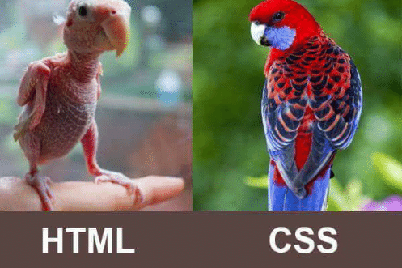

Vzhled našich stránek
Vzhled našim stránkám dodávají tzv. CSSS pravidla, známé jako CSS styly. Využívají se od nastavení rozměrů, změny barev až po realizaci různýh animací.
V našich stránkách je můžeme využít 3 způsoby:
-
Psát je jako vlastnost (atribut) u požadovaného elementu.
<span style="color:blue;font-size:25px">Tady je modrý text.</span>Tady je modrý text. -
Napsání párového tagu <style> v hlavičce stránky. Mezi otevírací a zavírací tag se píšou pravidla.
<style> body {background-color: green} p { font-size: 15px; color: red } </style> -
Použít svůj vlastní soubor s koncovkou .css, který se pak načítá v hlavičce stránky.
<link rel="stylesheet" href="../css/styl.css">
Třídy
Vlastnost elementu zapisovaná jako class="NázevTřídy".
V pravidlech se rozpozná pomocí tečky a názvu.
.zelenyText{color:green;}<p class="zelenyText">Zelený text pomocí třídy.</p>
Zelený text pomocí třídy.
Identifikátory
Unikátní označení elementu - na stránce nesmí být více stejných elementů se stejným označením. Už ho známe z používání kotev.
# se píše pomocí pravého Alt + x
#cerveneTucne{color:red; font-weight:bolder;}<p id="cerveneTucne">Červený text pomocí ID.</p>
Červený text pomocí ID
Přehled CSS vlastností lze najít tady.